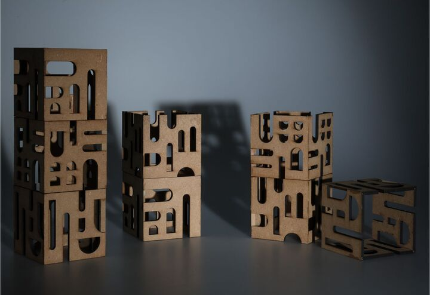
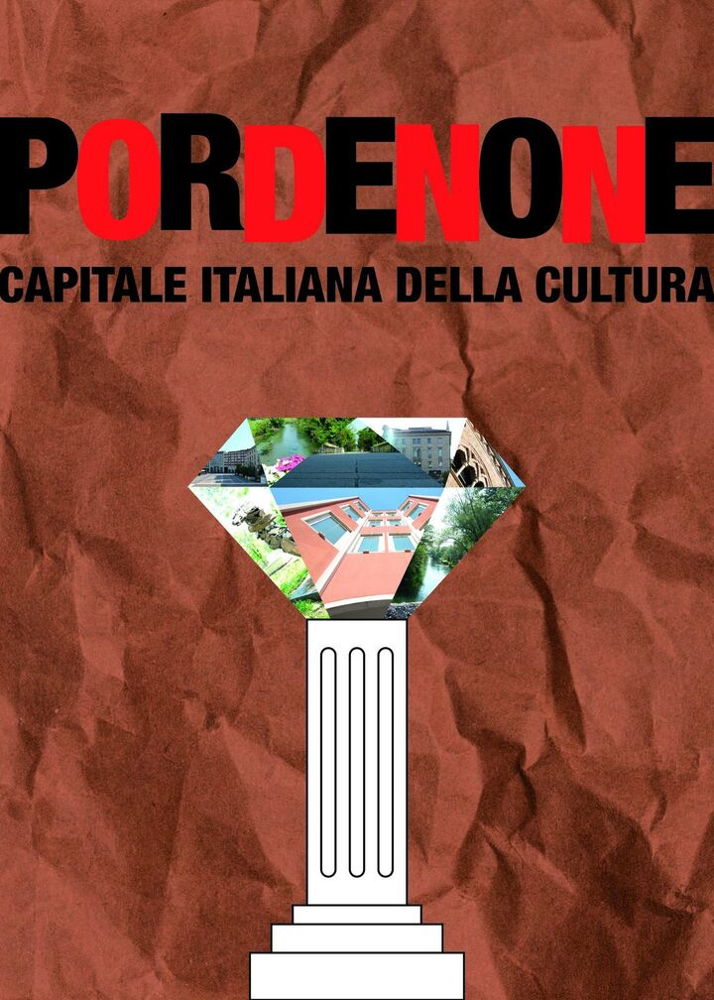
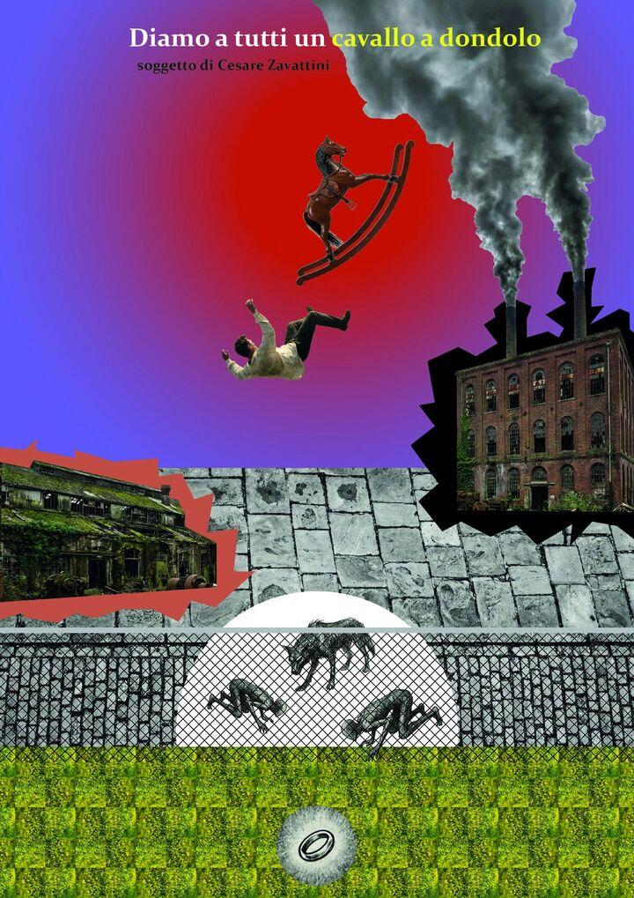

2026 · ISIA Roma
Design del Prodotto, anno 2
I lavori del secondo anno: un oggetto che modella la luce, tre manifesti e una locandina.

Teoria della forma
ArchiCubo
Moduli in MDF che filtrano la luce, con aperture ispirate all'architettura.
Sfoglia il progetto →
Comunicazione visiva
Tre manifesti
Pordenone capitale della cultura, i giovani che partono, l'acqua sotterranea.
Guarda i manifesti →
Semiotica per il design
Diamo a tutti un cavallo a dondolo
Locandina in collage per il soggetto di Cesare Zavattini.
Guarda la locandina →